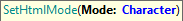
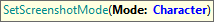

All the test preferences that can be set on your KB and environments have an associated setter method in the GXtest webdriver that is used before each test execution. This means you can override the value set in the KB properties in any test by just adding one of the following commands in it.
Official documentation page: SetArguments command
Official documentation page: SetBaseURL command
Official documentation page: SetBrowser command
Official documentation page: SetFileUploadBasePath command
Sets the default type of screenshot GXtest takes. Visit FullPageScreenshot property for more details.
Parameters:
Example of use:
&driver.SetFullPageScreenshot(true)

Sets the situations in which the page HTML must be saved.
Parameters:
Example of use:
&driver.SetHTMLMode("OnVerifyAndError")
&driver.SetHTMLMode("Never")

Sets the situations in which a page screenshot must be saved.
Parameters:
Example of use:
&driver.SetScreenshotMode("OnError")
&driver.SetScreenshotMode("Always")
Official documentation page: SetVerifyStopsExecution